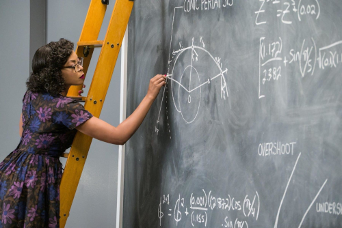

1. CIMMIC Preface
Das Leben muß nicht leicht sein wenn es nur inhaltsreich ist.
Life doesn’t have to be easy if it’s content-rich.
—Lise Meitner
1.1. Getting math running on a computer

A key scene in the film Hidden Figures has NASA’s scientific team of mathematicians, physicists, and engineers trying to figure out how to get a space capsule orbiting around the Earth back on the ground. They need to come up with the right math in order to transition the vehicle from an elliptical orbit into a parabolic-shaped descent path Technically speaking, a spacecraft orbiting the Earth is in an elliptic, not circular orbit. And the path back to Earth after breaking this orbit will resemble half of a parabola turned on its side, hence, the adjective parabolic. . This is a rare moment in a Hollywood film where they actually get the science right. There’s no magic, no special effects, no superheroes with magical powers, no cool grade-schooler who hacks Pentagon computers in three seconds; instead, just a bunch of ordinary-looking people with disparate backgrounds putting their heads together to solve a tough problem. Why is this so special? Because during the process of finding the answer we see the math coming out of books, out of heads, and being put to work on a real-world, life-or-death problem. The icing on the cake is the depiction of the team getting their just-delivered IBM mainframe computer (that no one knows how to run) to help them. The bottom line takeaway: In the world of STEM you’re never far from the front lines, the cutting edge, the “no one has done this before.”
Fast-forward to today where tens of billions of computing devices—nearly all capable of running rings around that first NASA computer—are doing computations big and small in every corner of the world. Yes, most of these calculations are relatively simple, but many are quite complex. This is the sort of math that, pre-Computer Age, was to be found only in dense books and dry collections of tables, on classroom and office blackboards, and, most mysteriously, as “mental representations” in the brains of that small cadre of people called mathematicians. And so today we should not underestimate the significance, the breadth and scope, the sheer amazingness of this transfer of math from paper, chalk, and thought into running code on very fast machines in our modern life. Learning the skills necessary for turning math and science into code will only increase in importance as we advance into the future. Our mission: see the math, grok To grok something is to understand it at its deepest level, to get it so thoroughly that you merge with it and it with you, coined by the sci-fi writer Robert Heinlein in his classic novel Stranger in a Strange Land. the math, then get the math going on the computer.
1.2. Code is math, math is code…
As computer scientist David Schmidt said
Any notation for giving instructions is a programming language.
and, yes, giving a computer “instructions” is what we’re doing with programming. And yet to this day we don’t fully understand how humans convey knowledge, instructions. Frankly, we don’t really know how one human teaches math to another. Similarly, the debate continues over how we should “do math” on a computer. But at some stage of one human teaching, sharing math with another human, the teacher and student get on the same page. The student catches on, “syncs up” their understanding with the teacher’s, and the knowledge is duly conveyed, mathematical abstraction grokked. But if we don’t really understand how math is mentally represented in a human brain, nor how one mental representation gets reconstructed in another’s brain, then adding the digital computer into this mix makes everything even more mysterious and intriguing. In order to bring the computer into this process our mantra will be
CODE IS MATH, MATH IS CODE
meaning the transfer, the syncing up of math must happen along with producing code, i.e., we’ll combine learning math with learning to code that math.
Contrary to what various “learn to code” promoters Most “learn to code” programs are rushed oversimplifications primarily geared towards only a narrow part of the broad IT world. User-interface (UI) coding is emphasized, while the other branches, e.g., data management, systems programming, and especially computational-numerical programming aren’t covered or given short-shrift. might say, the programming part of this puzzle cannot be just a stand-alone boot camp-style cram session. Oh no, you might say, there’s already so much math to learn, and here’s yet another thing to learn! Yes and no. Yes, it will be challenging, but we believe teaching math with code and the code with math will make both realms come alive and be fun to learn. We’ve seen this pairing make beautiful music together, and we want to build on this winning combination.
So if computer programs are written in computer programming languages, what language shall we write our code in? This may seem a controversial choice to some, but we’ll center on Haskell, a typed functional We’ll dive into what a typed functional language is later… language. One big reason Haskell is our choice is that it is beyond a doubt the most math-centric, math-conscious language there is. Pick up Haskell and it oozes math. But why choose Haskell with its rather steep learning curve? Why not, say, an easy-to-learn “blub” language? Blub languages have earned this not-so-flattering name by not being functional languages. What does that mean? Let’s begin to unpack this now.
When you write code in Blub, you are basically telling the computer—sometimes literally line-by-line—what to do Literally line-for-line programming would be Assembly. But many languages (e.g. C/C++) will have you explicitly, manually managing your program’s memory. That is to say, memory management is done by the programmer and not automatically handled behind the scenes as it now is in most modern languages. This is a hold-over from the early days of the so-called von Neumann machine-based digital computers of the 1950s. . This is called imperative programming, i.e., each line is a command, an imperative instruction. A functional language, on the other hand, is based primarily on the mathematical concept of a function. Functional languages are consider to be declarative See this article on declarative programming. languages. One main advantage of being declarative and function-based in a mathematical sense is that our code will conform to math function behavior, that is, when we put something into a computation we get back exactly one answer—and not one answer now, then perhaps a different, unexpected answer the next time, on and on. This might seem too hair-splittingly abstract so early in our discussion, but functional programming’s only-one-output feature is an absolute necessity for computational predictability We’ll discuss referential transparency, the technical term for this idea, later, but in the meantime you might want to take a crack at the Wikipedia article here. . Being able to know and trust your code helps reduce bugs and errors that may crop up as rude surprises when your program suddenly does something other than what you expected it to do. There’s a very big push these days to make code “provable,” i.e., guaranteed to do what it’s supposed to and not what it’s not supposed to do. Haskell is at the base of this mountain.
Again, this only-one-answer predicability is built in to math functions—right? When did you first hear about this? In a future section we’ll discuss middle-school math notions about linear functions plotted on a Cartesian coordinate system. Yes, it is. And why this is true can be seen in how math defines functions. We’ll soon take a fairly detailed dive into exactly what a math function is and why it’s so important in functional programming.
So if not Blub, why not a CAS CAS is short for computer algebra system. Wikipedia has a good article here. , i.e., a math software package like MatLab, Wolfram, or Mathematica, or a numerical package available with Python such as SymPy? The short answer is we really should learn to do hands-on programming. Why? Because software packages with ready-made plug-and-chug solutions won’t help us learn to negotiate the real computationally-based STEM world. But I’ve heard Python is very popular for math stuff, you might say. For an analogy, doing math with Python is like eating soup with a butter knife (C++ with a steak knife). Haskell — for many reasons — is like eating soup with a spoon. It’s the best utensil.
Learning Haskell will fall into two categories: A) theory deep dives and B) toolbox-building. A deep dive will take us on an exploration of just how and why Haskell is doing something the way it does. There is math theory is behind Haskell’s ways, and we’ll look into some of method behind the seeming madness. Again, there’s no other language like Haskell …except for its siblings in the typed functional sphere SML, Ocaml, and F#. Toolbox-building, on the other hand, will be more “learn to code,” only with Haskell, i.e., figuring out what its syntax, semantics, its first principles hands-on.
1.3. Math is abstraction
We believe anyone can do math, not because we’re cheery, sunny optimists, but because it’s just a fact. But why then is math is so difficult to learn for so many people? We believe the learning problems arise because, again, we really don’t understand how the human mind deals with abstraction. Since Alexander Luria’s groundbreaking studies of the IQs of pre-literate people in the Caucus Mountains, we’ve gradually come to see abstraction as a much more complicated beast than before See James Flynn’s TED talk, and read the first chapter of James Gleick’s The Information: A History, a Theory, a Flood. . Long story shortened, math can be a very imposing vertical wall of abstraction. And, as Luria discovered, there may exist social and cultural biases, actual social-psychological resistance against abstraction. We cannot simply assume that any and all abstraction and symbolism can and will be acceptable to our math audience The classic line, “What is this for? Why are we doing this?” is the elephant in the middle of the math classroom. . But if we approach the abstraction curve with respect for its difficulty and steepness and we don’t resort to force or hand-waving To hand-wave in science is to dismiss or downplay complexity, to skip over or sweep something difficult under the rug. We will avoid hand-waving at all costs. , we can master deeper symbolism and abstraction. We must build up our abstraction receptor sites in our brains, so to speak.
By the way, mathematics is just as much about words as it is about numbers and formulae. Of course some math doesn’t require any words. There is the story of an American math professor who “translated” Russian math books—without understanding a word of Russian. But that is very rare. A typical upper-level math text on, e.g., abstract algebra, will have the reader weighing, pondering every word in every sentence, over and over. You may spend a week trying to wrap your head around just one page of one chapter. Hence, we need to develop a very sharp, precise and exacting focus on what words really mean, what they really imply. And we need to expand our math and computer science vocabulary. A doctor who had just graduated from medical school reported his school had emphasized to what seemed an extreme degree knowing terminology, remembering sheer masses of words. This will be similar. Get the words and their precise meaning down—and the learning will go much smoother; otherwise, every sentence risks becoming bogged down in confusion.
1.4. Serial versus parallel
Human vision happens in parallel. All the objects in our field of vision hit our eyes and brain all at once, in parallel. However, we speak, hear, learn serially. That is to say, we receive words as a stream, a string, one element at a time, one atom of information after the other. Math is serial. We read a math formula from left-to-right, just like it was a sentence. We read a math proof top to bottom. We read a string of numbers, again, left-to-right serially. But if you don’t understand something in a math lecture early on—you might be lost for the rest of the lecture. That’s because the lecture is coming at you in serial, and everything happening right now is dependent on your having understood what came before. Therefore, everything written, language or math, is one piece after the next; and it’s then up to our minds to take in the serial stream and process it properly into some mental representation whole.
Unfortunately, a human mental representation of math is a very amorphous, quasi-parallel beast. Really, we don’t know much about how the human mind houses and processes math. So if math on a chalkboard or in a book is like sheet music’s notes on a page, how do we “play” math? Today, we “play” math on our new instrument: the digital computer.
1.5. Bad math
One big, big mistake in the teaching and learning of math is when we resort to conditioning. When circus animal trainers train (torture) their animals, they simply repeat routines over and over until the animal finally catches on. Does the rat being forced to negotiate a maze or the lion to jump through a burning hoop know, understand what the idea, the concept, the purpose is? No. They’re simply in a stimulus-response behaviorist loop.
This sort of human behaviorist conditioning can be in the form of rote learning—which everyone agrees these days is not the best way. And yet how many times have you heard, in one form or another, “When you see this on the test, do this?”
Another version of this is what the mathematician Jay Cummings calls The Way. So in your math class you start a new topic and you are shown The Way to handle it. You see The Way used in examples, then The Way is employed to solve the exercises at the end of the chapter. And when you see problems of this topic on a test, you use The Way. But learning math by simply piling up as many The Ways as possible rarely leads to any deeper understanding of math, let alone its purpose, let way alone its aesthetics or beauty.
What’s the alternative to behaviorist conditioning, to rote, to The Way learning? Concept-based learning, getting above the details into carefully constructed, carefully worded, carefully delineated generalizations where similarities and patterns can be grouped and mentally aggregated into a deeper understanding. Another technique is to simply triangulate, i.e., hit the problem from different angles, not be afraid to see off-beat examples. Yes, The Way is often unavoidable, but with careful triangulation, deeper meaning can be gleaned. More on all this learning psychology as we progress.
1.6. Editorial rant: The precarious state of STEM
The American public K-12 math curriculum is designed to be a smooth, gradual on-ramp for further math, physics, and engineering studies at the college level. This strategy started back in the Cold War Era when we thought we were behind the Russians because they were the first to put a satellite in orbit in 1957. The so-called “Sputnik crisis” resulted in a scramble to improve American math, science, and engineering. Problematic is how this ancient curriculum does practically nothing to prepare students for the ever-growing, evermore-important sector of applied computational math and computer science. Today’s incoming college Freshmen choosing computer science are confronted with many strange and alien concepts they’ve never seen before, the main one being discrete mathematics We’ll learn plenty about discrete math as we go. But for a quick introduction, consider a light switch that goes on or off. That’s two discrete states. The opposite of discrete would be continuous. So think of a volume control knob on your radio, continuous in that it continually changes, i.e., the change is so small and incremental that they seem to blend together into one continuous sweep from soft to loud. . Without any previous exposure to the esoteric math of computer science, the first two, three, four semesters of a college comp-sci degree are typically a quick-time march to catch up Imagine wanting to study math in college after having seen absolutely no math K-12. The Common Core State Standards Initiative has taken steps to narrow this gap. Much of their math curriculum attempts to expose kids to a discrete math, if not a computer algorithm way of seeing math. But in our humble opinion it’s far too little. . The result is, nation-wide, high drop-out/flunk-out rates in CS departments…
…but not necessarily at the elite universities with their 90th-percentile students …as I refer to them the big boys and girls who can do the “heavy lifting”… . At the world-class STEM schools the death march is fast and furious and the majority survive. At the second-tier schools, however, this sort of pace usually isn’t maintained and corners are cut. And so a two-tiered world has emerged, one group getting a solid CS education, the other getting a watered down, vocational school version of CS. Here we will attempt to build an on-ramp to computational/numerical math alongside, complimented by coding that is, in turn, grounded back into solid math and computer science. To accomplish this we’ll explore the world of discrete math, algorithms You’ve no doubt heard of algorithms. Very simply put, an algorithm is a set of instructions, perhaps like a baking recipe, that produces a mathematical cake. In computational math, we’re basically redoing, reimagining math formulae as algorithms which then can run on computers. Lots and lots more about algorithms as we move along. , data structures, and numerical applications parallel to their underlying mathematics.
Of course when the math and the code march together, the pace can slow appreciably, since we might need to take get-up-to-speed side trips. We’ll often say, “Check out this tutorial,” and you’ll follow a link to an online resource and start supplemental “apendix” learning. Of course whether or not you follow our advice, as well as the level to which you grok it will be up to you. But expect rabbit-holing “Down the rabbit hole” is a concept borrowed from Alice in Wonderland to mean going into a strange, new world of excitement and challenge. from now on. We’re all about depth-first learning But of course we run the risk of “getting lost in the weeds.” Beware of the endlessly bifurcating rabbit hole. From the Wikipedia article: …In contrast, (plain) depth-first search, which explores the node branch as far as possible before backtracking and expanding other nodes, may get lost in an infinite branch and never make it to the solution node. , not breadth-first. Typically, breadth-firsters want to avoid “getting lost in the weeds.” Unfortunately, weeds are not to be avoided in STEM, and you should develop experience in balancing just how much weed-whacking you need to do in order to resume your main investigation with insight and confidence. In the beginning, what we offer here on-site will seem like just the tip of the iceberg, the rest of the learning experience happening down off-site rabbit holes (R-hole) quick (and not so quick) dips. Again, this is quite necessary and unavoidable in order to understand best how math can be recast into real-world code for real-world applications. Rabbit-holing is definitely a part of real-world STEM.
We’ll have a rating system for rabbit holes: a critical rabbit hole (RC-hole) is a hole you need to go down, material you absolutely need to learn; an optional rabbit hole (RO-hole) would help with the material but is not absolutely necessary; and an FYI rabbit hole (RFYI-hole) is a good source for expanding your understanding, but isn’t necessary to keep moving along. When appropriate, a list of R-holes with the ⇲ symbol will be listed at the top of topic headings. (Note: smaller, side excursions will simply be links in the text.)
1.7. A project-based, real-world approach
No doubt the typical, standard public school K-12 math curriculum is a well thought out, gentle and gradual on-ramp for most higher-ed STEM studies. But we won’t always be so gradual. Often enough we’ll be “deep end,” as in throw you in the. Sounds brutal, you say, Are you sure that’s the best approach?
As approaches go, deep end is pretty much a given in the real STEM world. Rarely will a new task or project be something you’ve already know everything about, something you can simply shake out of your sleeve in no time then go home early. Rather, the STEM real world is all about being baffled, out of your depth, overwhelmed—until you back off, take a few breaths, begin to think it through, pick it apart, try this and that, do some rabbit-holing and woodshedding Woodshedding is a jazz music term meaning to learn and practice. , ask around if anybody else has seen anything similar … which leads to failures then minor successes, followed again by more failures and successes… Again, this is how the real STEM world is. The difference will be you’re not our paid employee, and it’s up to you to set the pace and deadlines.
1.8. …and a real-world toolset
Real-world work requires real-world tools. The first casualty of this logos is we eschew “graphing calculators.” Why? Simply because there are virtually no graphing calculators used in real-world STEM. Instead, we will use a combination of plotting and graphics software found in Haskell, along with long-establish workhorses like Gnuplot and PGF/TikZ.
Another perhaps controversial stance is we will not use commercial, proprietary software. Instead, we’ll base everything we’re doing on free software. Why? Because nearly all software used in STEM today is in fact free-software based. Really?! Yes! All cutting-edge STEM software is free. For that reason we’ll be based in the Linux operating system We use the latest version of Ubuntu. We have free Ubuntu installed on cheap, used laptops from Ebay. For example a more than adequate Thinkpad T470 (specify “no operating system”) can be had for under $300. An even cheaper option would be a Thinkpad T450 (no OS). Other brands will work as well. You can do just fine on a T430 as well for ~$150. Whatever you do, try to get as much RAM as you can and use an SSD drive. . Sure, you can use Mac or Windows, but we’ll assume, expect you’re with us on a Linux-based system. One of the tipping-point reasons for this decision is the Linux command line environment; we feel everyone should get some experience with it.
We’ll also use the Emacs text editor. Emacs See also the home site and this user site. is far more than a text editor. It’s an entire cyber-universe of its own with tons of add-on packages for mind-blowingly powerful functionality. And though it can at times be hard to wrangle, Emacs’ usefulness and flexibility is unprecedented. No other IDE or editing environment comes close to its power and versatility.
1.9. The journey ahead; where are we going?
Where are we going? What do we expect to achieve? The Computer Age has forced a split between what is now known as continuous math, i.e., the math of physics and engineering; and discrete math, the math brought to the fore by the theoretical implications and requirements of computers. We know what continuous math is—as we’ve mentioned, the world’s K-12 math curriculum is all about it. And we see what it does, i.e., the engineering technology all around us. But where is the computer-led side of science and technology going? Many today say into AI, artificial intelligence. But teaching a computer to really think has proven to be an elusive goal. The following joke will illuminate
Two people are walking along the beach when one says, “Look! A dead seagull!” The other looks up into the sky and says, “Where? Where?”
Of course this is funny to us, because we consider it daft to assume that just because seagulls are birds spending most of their lives sailing the coastal breezes, that when one dies it would remain aloft. But a computer scientist might not laugh. Why? Because of the concept of logical entailment. In our joke, the logic of a dead bird being unable to fly is simply taken for granted. However, if we are trying to program a computer to have what we consider intelligence we must tell it literally everything it would need to know. We simply cannot expect it to deduce, infer facts that are not deducible, not logical entailments from the explicitly given facts.
Consider this sequence of objects: \(\{1,\; nickel,\; 10,\; quarter, \;50, \;?\}\;\;\). What should the last element “?” be? Having experience with these sorts of aptitude test questions, most of us know to say “dollar.” But to know that “dollar” completes the sequence assumes much logical entailment. A whole string of facts must be in place before we have the necessary depth of logic to figure this out. The bottom line is, in the computer world you must build logical entailment up very thoroughly, leaving nothing out.
Once we’ve got some experience under our belts, we’ll notice that the numerous side trips, the rabbit-holing and woodshedding to fill in gaps will decrease—simply because we already know stuff and we’re getting the hang of things. As a result our turnaround time on getting things done will shorten. Still, it will always be hard. STEM will always be a tough and challenging uphill battle, but a very good, very rewarding one at the end of the day. In short, we think it’s the best, the most noble path there is. And so with no further ado, let’s start.
1.10. Bottom line…
You still need a bottom line? All right then, do STEM because someone will pay you to do it, i.e., it’s an honest living.